| Lab1 | Lab2 | Lab3 | Lab4 | Lab5 | Lab6 | Lab7 | Lab8 | Lab9 |
|---|
|
Індивідуальне завданняКопайгородська Дар'яЗаданий масив цілих чисел. Побудувати новий масив, в якому спочатку стоять числа, що діляться на 2, потім ті, що діляться на 2 та 3, потім на 3. Надрукувати вхідний та вихідний масиви.Упорядкувати масив у порядку зростання.(метод Швидкого сортування)Надрукувати вхідний та вихідний масив.Застосувати функції 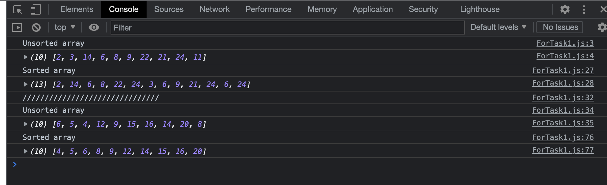 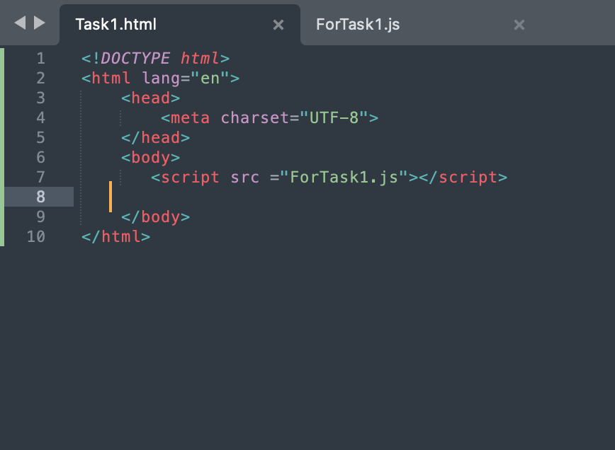 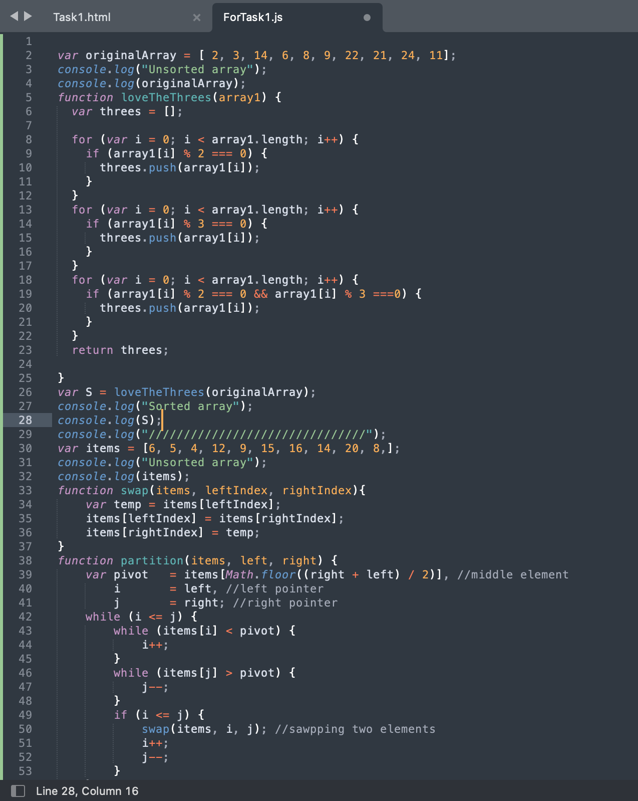 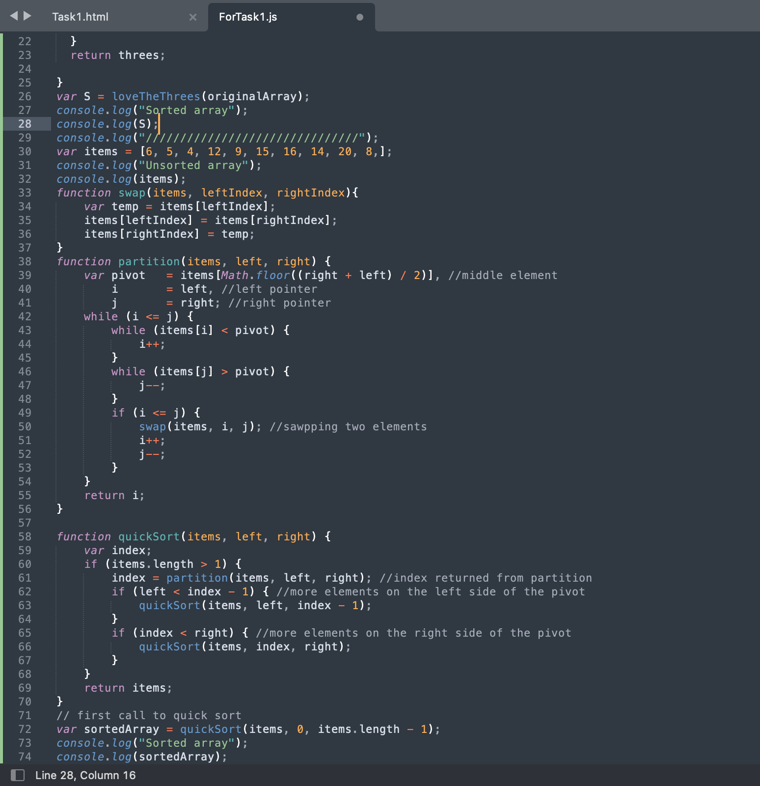 Боярчук МаріяЗавдання: Задані одновимірні масиви А, В з 10 чисел. Побудувати масив С, кожний елемент якого обчислюється за формулою: 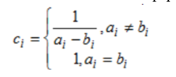 В масиві С поміняти максимальний елемент і перший. Вивести масиви до переставлення елементів та після Упорядкувати масив у порядку зростання методом бульбашки. Надрукувати вхідний та вихідний масив.Застосувати функції 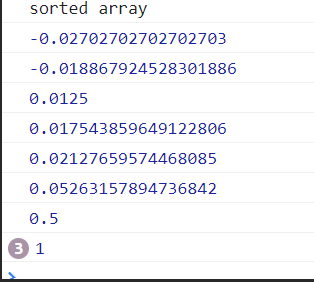 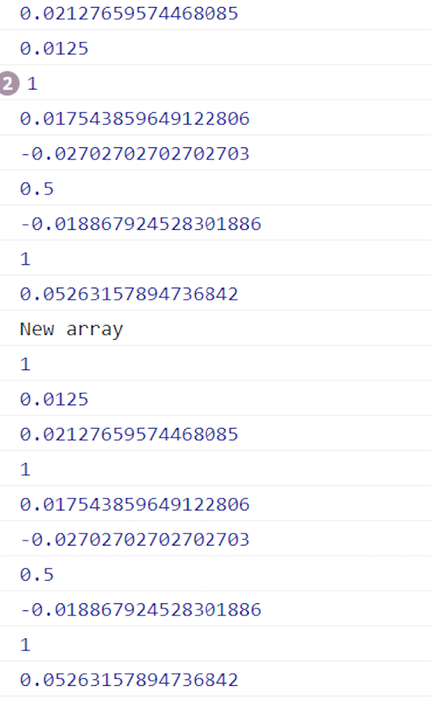 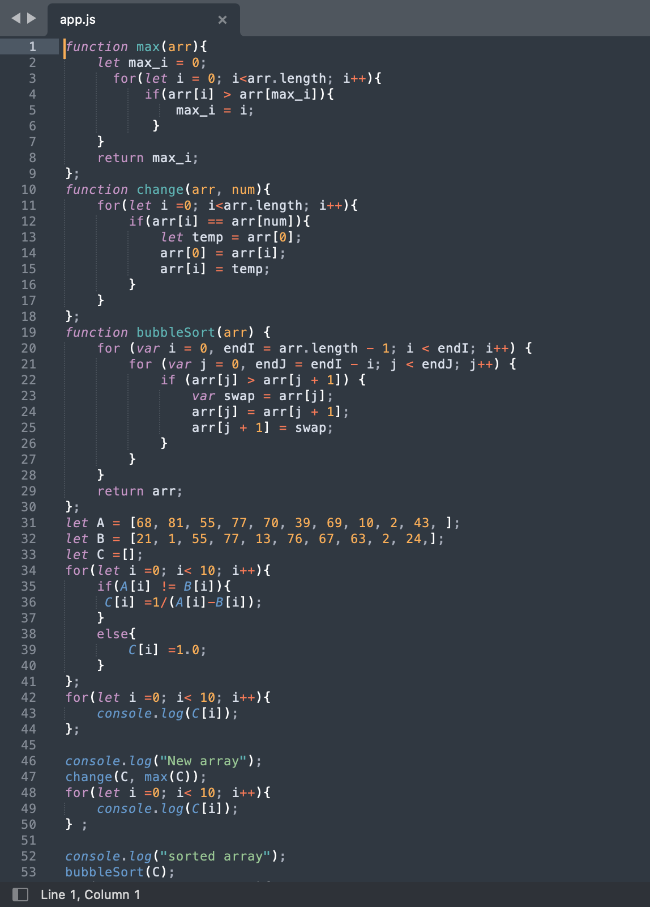 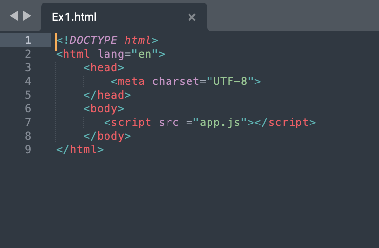 Трачук ЮліяЗавдання: Створити одновимірний масив, кількість елементів якого задана користувачем. Знайти максимальний серед парних елементів та мінімальний серед елементів з парними індексами. В масиві поміняти місцями знайдені максимальний та мінімальний елементи, надрукувати вхідний та вихідний масиви. Виконати сортування вихідного масиву за зростанням методом вставки. Застосувати функції 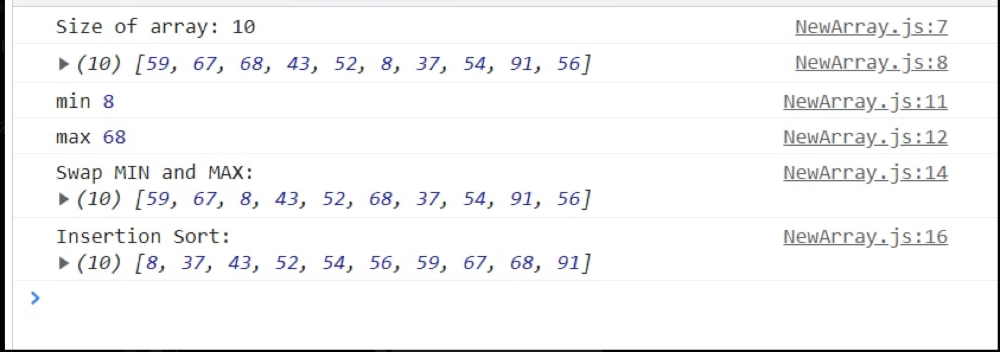 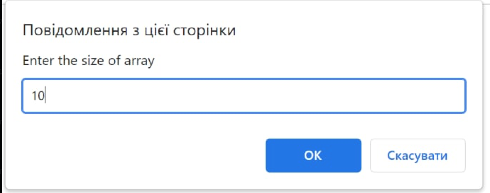 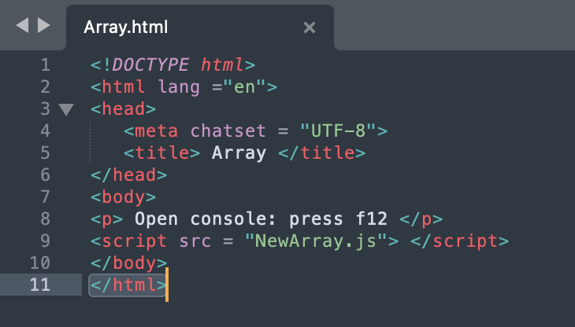 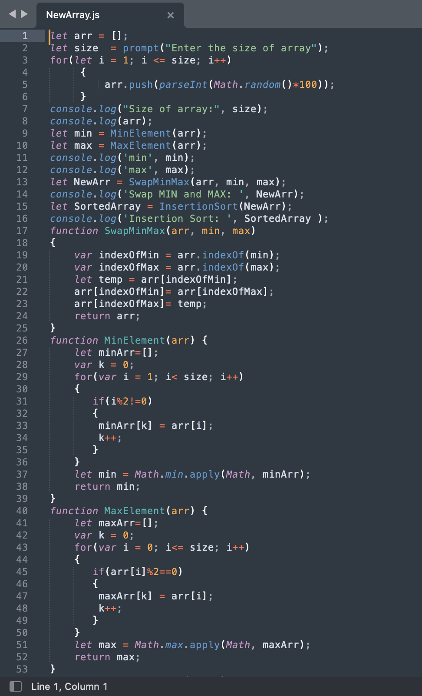 Клеба ОлександраСтворити одновимірний масив, кількість елементів якого задана користувачем. Визначити максимальне та мінімальне значення серед елементів із парними та непарними номерами.порядкувати масив у порядку зменшення методом вибору. Надрукувати вхідний та вихідний масив. Застосувати функції |